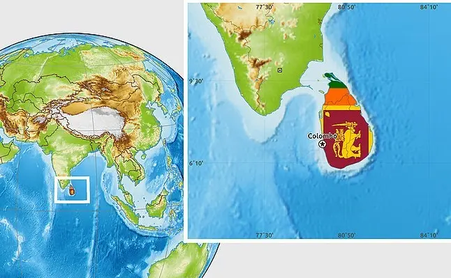

LOCATION
Sri Lanka is an island country in the Indian Ocean, just off India's southeastern coast. Despite its small size (slightly larger than the state of West Virginia), Sri Lanka has a population of approximately 20 million people, which is nearly the same as the population of Texas. The island has a diverse economy based on agriculture, mining, fishing, manufacturing, and tourism, and it is rich in natural resources.
Sri Lanka, shaped like a teardrop, measures approximately 255 miles from north to south and approximately 135 miles from east to west, with a total land area of approximately 25,300 square miles .It has a coastline of more than 830 miles . The island is surrounded by a broad coastal plain that rises to gently rolling hills inland.
SLOPES TO THE SEASHORE
Sri Lanka is one of the most desired and popular spots for an ideal tourist, with all of nature's treasures, old culture and tradition dating back 2500 years, and a vibrant array of attractions.
The country boasts a beautiful coastline that runs constantly along its southern and northern shores, where you may relax on palm-fringed beaches while drinking a king coconut and surf at Arugmbay.Up in the hill country, while sipping a hot cup of freshly brewed, world-renowned Ceylon tea, you may appreciate the lovely, cold air wafting through your hotel room window in Nuwaraeliya.
POPULARITY
Sri Lanka, which has eight UNESCO World Heritage sites, is an amazing vacation spot. Sri Lanka Tourism just received the "Leading Adventure Tourism Destination of the Year" award at the World Travel Awards 2018, which were hosted in Hong Kong.
The country was also recently awarded the number one tourist destination in 2019 by Lonely Planet magazine, a milestone in the country's history as a prominent vacation destination.
CAMERA ROLL
A camera could never fully capture the beauty of Sri Lanka's breathtaking scenery. But, just in case, bring a camera. Because we guarantee that the moment you step onto the island, you will be making great memories that you will want to have hard evidence of, in the years to come.
We present a small selection of photos clicked by happy travelers in Sri Lanka. You could be one of them soon! Enjoy!
Some useful phrases
- Ayuobowan - Hello
- Kohomadha - How are you?
- Meeka Keeyadha - How much is it?
- Bohoma istuti - Thankyou very much